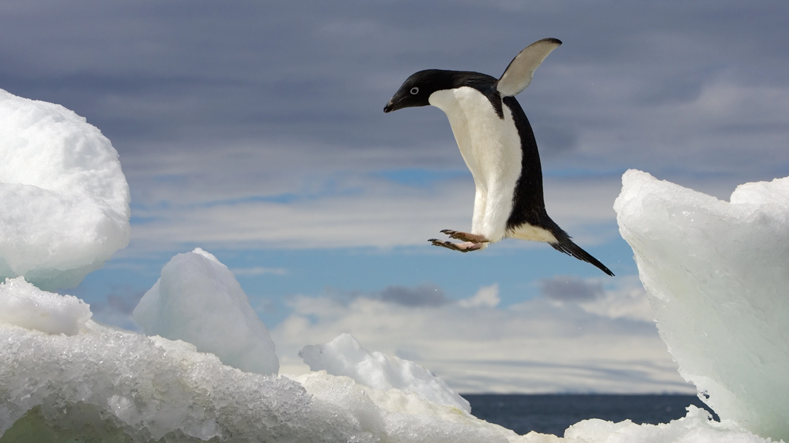

Adélie penguin

The Adélie penguin is a species of penguin common along the entire coast of the Antarctic continent, which is the only place where it is found. It is the most widespread penguin species, and, along with the emperor penguin, is the most southerly distributed of all penguins.
Back to Home page